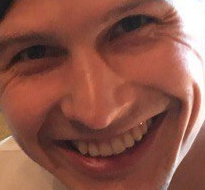
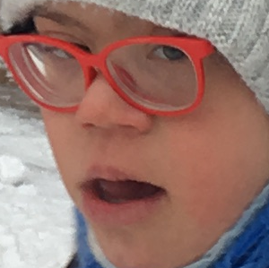

Педро педро пееедро пееедрооо пед. Педро-пед, педро-пед, пееедрооо-пед
Дииии. Мааааа?? (перевод с чувашского - "ПОЧЕМУУУУУ???)
Дима Педро был одинм из лидеров в области. Таким образом он потерял молодость в москве полностью. И сейчас, даже если биться головой об стену - судьба всё равно в овраг скатиться
на деревянных дервенских
санях. Коней никто в сани не запряжёт, потому что жалко тратить на него настоящих живый лошадей, даже одну.
Поэтому москва по сути есть убийца, но там он встретил Витинский с помощью
скаральной фразы
"А Чооо ты мне не позвониилл?"
и после этой фразы последовал дикий станиславовский смех "ХО_ХО_ХО_ХО_ХО".
Но дима при этом остался сидеть в подъезде выпивая две бутылки пива
потому что он не поступил на программиста и
всязи с этим проебал жизнь, и вернувшись к этому через 15 лет, но уже сани в овраг едущие ждут его смазанными уже этой зимой.
Из всего этого текста следует один вопрос, звучащий голосом синдрома дауна "МААААААААА????"
Ссылка на этот сакрально-философский вопрос
Pedro
| Анализ гибели Педро |
| ошибка в том что пиво не попил со мною в подъезде, когда узнал о резултатах не поступления на программиста в ЧГУ |
если бы попил, то ничего бы не изменилось, но я бы за бесплатно попил пиво в подъезде и в душе бы угарал над тем что ты не поступил, а я поступил |
| ошибка в том что ты в 7 или 8 классе пил самогон в деревне и после этого ты начал не учитсья в школе а ноги из ботинок вытаскивать и давать нюхать разным человекам |
на самом деле было угарно, когда ты давал нюхать ноги людям. Я просто завидывал, что так я сам не мог делать, потому что не хватало духу на это. Это надо быть смелым, что бы давать нюхать ноги.
|
| ИТОГИ: ПЕДРО ЕДЕТ НА САНЯХ В ОВРАГ |
Теперь предлагаю перейти к графическому анализу Педро
рассмотрим нижепредставленные два изображения
На изображении слева представленно вечно-улыбающееся лицо Димы Педро, на изображении справа предоставлено лицо человека с синдромом дауна.
| ГРАФИЧЕСКИЙ анализ Педро |
| 1 |
|
 |
| 2 |
 |
 |
Пришло время подвести итоги графического анализа
| Вывод №1 |
Как видно из первой строки граф.анализа едва уловима разница телосложении и фокусации внимания на отдельных элементах |
| Вывод №2 |
Из второй же строки психо-графического анализа следует обратить внимание на глазные яблоки и уголки верхних оральных губ в результате
которого нельзя сделать однозначных выводов об виртуальном синдроме дауна внедрённым сторонними силами в мозг Педро.
Однако же нельзя не учитывать фактор климатического внимания, а также доказательства того что Ленин является грибом. Здесь же содержится объяснение и однозначное доказательство Гриба-Ленина и это тесно связано с ДимойПедро-Лениным. |
| Вывод №3 |
И последний, самый важный вывод из графического анализа - фотография во второй строке первого столбца вполне сгодиться как могильная фотокарточка. |
|